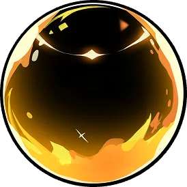
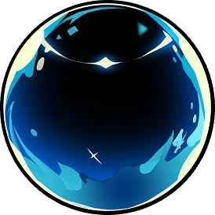
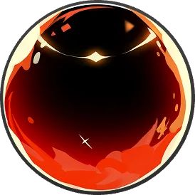
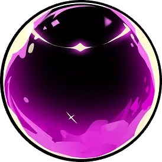
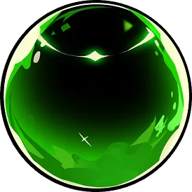
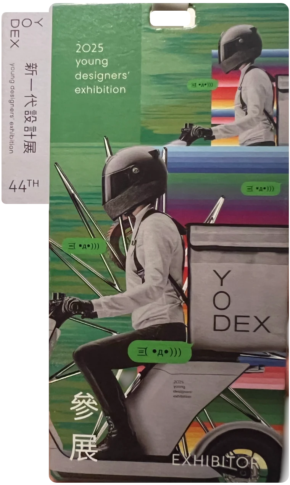

Emosphere
An interactive installation shown at YODEX in Taipei and VGW in Kaohsiung.
Stepping into a new country is more than a physical journey — it’s an emotional one. As international students living in Taiwan, we’ve experienced a whirlwind of feelings.
EMOSPHERE is an immersive design project that transforms these real emotional experiences into a sensory storytelling installation. Through glowing orbs and ambient sounds, we invite visitors to step into the emotional worlds of those navigating life far from home.
How does it feel to live far from home?
This project began with the question: how does it feel to live far from home? Drawing from real cross-cultural encounters, we created five core emotional themes. Each emotion represents a meaningful moment experienced by a lone traveler, such as facing language barriers or receiving an unexpected act of kindness.
Emotions you can hold
These moments are represented by physical memory balls, making abstract emotions tangible. The goal is to foster empathy and invite users to reflect on the emotional challenges of adapting to life in a new culture.
- 01
To express the emotional journey of international students through animation and sound.
- 02
To spark empathy across cultures by showing that emotions transcend language
- 03
To highlight the beauty and struggle of adapting to new environments
- 04
To invite visitors to reflect on their own emotions when facing the unknown
Arduino based emotion sensor system
Sound design animation synced to emotion balls
A dreamy, surreal visual style combining soft lighting, glowing orbs, and whimsical installations.
Connecting the orbs to the story
I developed the communication system between the Arduino RFID scanner and Unity, allowing each scanned memory ball to trigger its corresponding animation. I also managed wiring and hardware setup, including the servo-based ball drop mechanism.
Which memory would you like to explore?
Each glass orb in our installation represents one of five emotions commonly experienced by foreigners living abroad:





These “memory orbs” activate interactive stories, giving visitors a glimpse into the inner lives of those learning to belong in a new world.
Exhibited at YODEX Taipei & Vision Get Wild Kaohsiung
The installation has been shown at our on-campus exhibition, and was featured at YODEX in Taipei and at Vision Get Wild in Kaohsiung.

Visitors responded positively to the tactile experience and the emotional impact of the animations. Many shared that the first-person perspective made the scenarios feel relatable and real. The physical act of receiving and scanning a ball helped create a deeper emotional connection, and feedback confirmed the project’s effectiveness in encouraging empathy and cultural understanding.